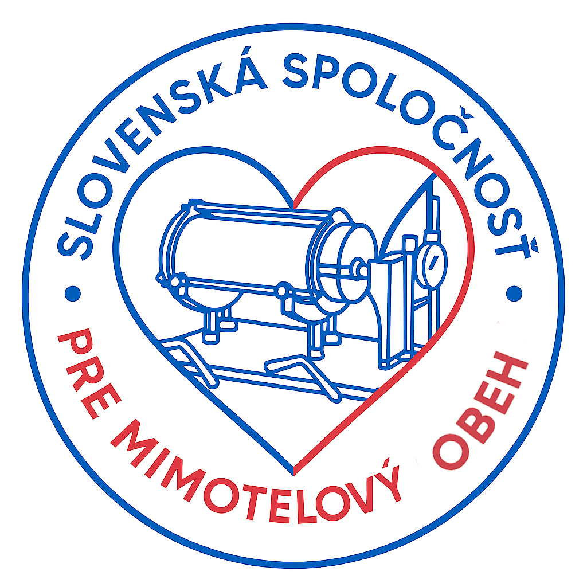
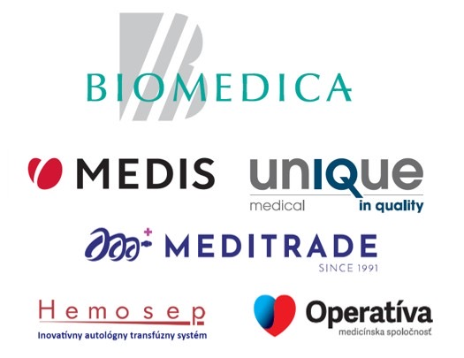

Slovenská spoločnosť pre mimotelový obeh na Slovensku poskytuje priestor na vzdelávanie a odborný rozvoj, podporovanie ďalšieho vzdelávania záujemcov o túto profesiu, nadväzovanie medzinárodných kontaktov, organizovanie odborných kurzov a konferencií na zvyšovanie našej kvalifikácie na medzinárodnej úrovni. Perfuziológ je vysokošpecializovaný odborník, ktorý manažuje chod prístroja pre mimotelový obeh počas zástavy cirkulácie najčastejšie počas kardiochirurgických operačných výkonov. Nahrádza funkciu srdca a pľúc. Obsluhuje súčasne niekoľko čerpadiel, prístrojov, vykonáva odbery arteriálnej a venóznej krvi zo systému mimotelového obehu (MO), aplikuje lieky, roztoky, krvné deriváty v súčinnosti s kardioanestéziológom a súčasne komunikuje s členmi operačného tímu. Zabezpečuje adekvátnu oxygenáciu a elimináciu CO₂, vykonáva korekciu vnútorného prostredia, realizuje riadenú hypotermiu a v koordinácii s kardiochirurgom a kardioanestéziológom dohliada na bezpečný chod operačného zákroku, s čo najmenším možným rizikom pre pacienta. Pracuje v súlade s dodržiavaním zásad sterilného prostredia a operačného poľa. Perfuziológ zodpovedá za realizáciu nasledovných úkonov: bezpečné manažovanie pacientov na mimotelovom obehu počas elektívnych alebo urgentných kardiochirurgických operácii, realizácia eliminičných techník, autológnych separátnych techník i support počas rizikových intervencií na CathLab. Uplatnenie perfuziológie našlo svoje miesto i na poli intenzívnej medicíny, a to hlavne v ére ťažkých respiračných zlyhaním, kedy sa náročnosť starostlivosti o pacientov s RDS (Respiratory Distress Syndrome) začala orientovať smerom extrakorporálnej membránovej oxygenácie (ECMO). Rozvoj ALS (advanced life support) pomocou ECMO metodiky sa taktiež realizuje v spolupráci s perfuziológmi – jedná sa o ECPR (extracorporeal cardiopulmonary resuscitation).
Odborný kongres Slovenskej perfúziologickej spoločnosti sa uskutoční v Žiline v priestoroch hotela Holiday Inn. Podujatie je určené pre perfuziológov, lekárov a zdravotníckych odborníkov so záujmom o mimotelový obeh, podporné systémy krvného obehu a intenzívnu medicínu.
9:00 – 9:10 Zahájenie kongresu - MUDr. Beňa Cinre Bratislava
9:10 – 9:20 Perfúzia na Slovensku – M. Čontofalský Cinre Bratislava
9:20 – 9:30 Transplantačný program – Dr. J. Ľupták Nusch Bratislava
9:30 – 9:40 Poľsko – Andrzej Jelonek
9:40 – 9:50 Nové kardiocentrum – M. Vaľko Košice
9:50 – 10:00 Goal-Directed Perfusion – M. Volt
10:00 – 10:15 Coffee break
10:15 – 10:20 ECMO terapia – M. Škabradová
10:20 – 10:30 Minisystémy – L. Zlochová
10:30 – 10:40 Thorakoskopické operácie – M. Marcin
10:40 – 10:50 Alergia na latex – M. Volt
11:00 – 11:15 Coffee break
11:15 – 11:25 Kardioanestéza – D. Rybár
11:25 – 11:35 Kardioplegia – O. Zuscisch
11:35 – 11:45 Enzýmy – P. Jakub
11:45 – 11:55 Disekcia aorty – M. Volt
11:55 – 12:05 CytoSorb – Butorová
12:05 – 12:15 Cell saver – R. Kušičková
Lunch
13:00 – 16:00 Simulačná/workshopová sekcia:
- ECMO/ECC simulácia
- Impella simulácia
- Carl Resuscitec
30.5. 2026
9:00 – 9:10 Exvivo perfúzia pľúc – P. Hedvičák
9:10 – 9:20 Thorakoabdominálna výduť – V. Jarošová
9:20 – 9:30 AAA riešenie – M. Volt
9:30 – 9:40 Prednáška Poľsko
9:40 – 9:50 Organ care system – R. Kušičková
9:50 – 10:00 Prednáška Poľsko
10:00 – 10:15 Coffee break
10:15 – 10:25 Impella – K. Skrozs
10:25 – 10:40 Impella – MUDr. Olejárová
10:40 – 10:55 ECPR skúsenosti – Dr. Fedorák
10:55 – 11:10 ECPR podpora – M. Piliarová
11:10 – 11:20 ECPR Košice – T. Maďarová
11:20 – 11:30 Carl Resuscitec
11:30 – 11:40 Lifemotion – Jürgen Danek
11:40 – 11:50 Prednáška Poľsko
Program konferencie sa bude ešte verifikovať.
Mgr. Michal Čontofalský
Predseda spoločnosti

Kongres sa uskutoční v Hoteli Holiday Inn v Žiline.